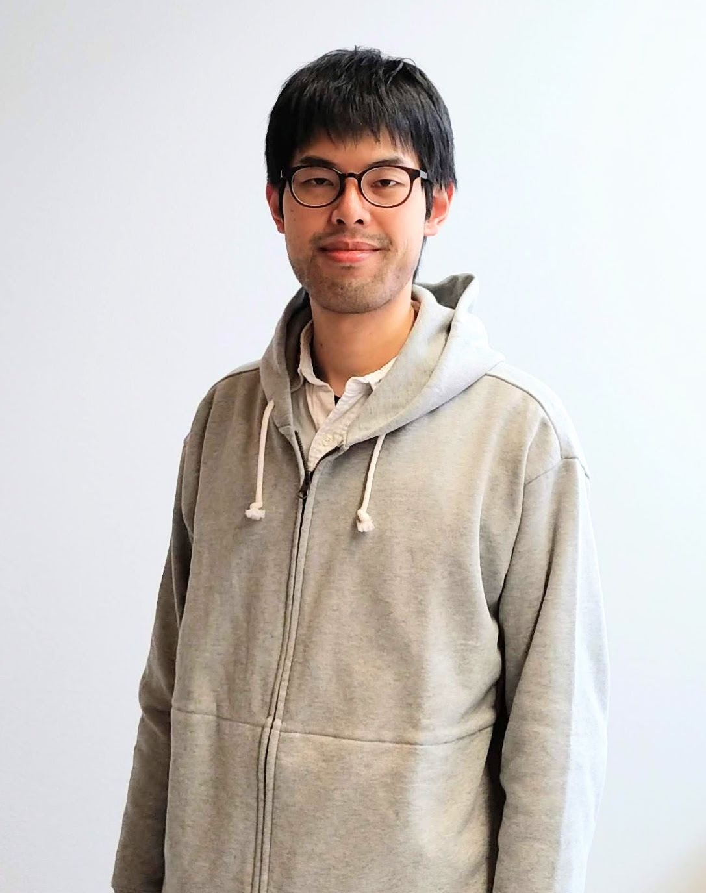

About
Hi! My name is Shinji Koshida.
I am currently an Academy Research Fellow at Department of Mathematics and Systems Analysis of Aalto University working on mathematical physics.
I am interested in conformal field theory in two dimensions and related topics that include
- Vertex operator algebras and representations
- Critical lattice systems
- Schramm–Loewne evolution and Gaussian free field
Publication
Preprint
- M. Katori, S. Koshida, C. Soukejima, and R. Suzuki, Coupling of radial multiple SLE with Gaussian free field, and the hydrodynamic limit, [arXiv:2508.13622].
Published
S. Koshida, Module categories of the generic Virasoro VOA and quantum groups, SIGMA 21, 039 (2025). [Link, arXiv:2207.12969]
S. Koshida, Planar algebras for the Young graph and the Khovanov Heisenberg category, Int. J. Math. 36, 2550002 (2025). [Link, arXiv:2307.07465]
S. Koshida, Normalized characters of symmetric groups and Boolean cumulants via Khovanov’s Heisenberg category, J. Comb. Theory Ser. A. 196, 105735 (2023). [Link, arXiv:2110.15743]
S. Koshida and K. Kytölä, The quantum group dual of the first-row subcategory for the generic Virasoro VOA, Commun. Math. Phys. 389, 1135–1213 (2022). [Link, arXiv:2105.13839]
M. Katori and S. Koshida, Three phases of multiple SLE driven by non-colliding Dyson’s Brownian motions, J. Phys. A: Math. Theor. 54, 325002 (2021). [Link, arXiv:2011.10291]
S. Koshida, Free field theory and observables of periodic Macdonald processes, J. Comb. Theory Ser. A. 182, 105473 (2021). [Link, arXiv:2001.04607]
S. Koshida, Multiple backward Schramm—Loewner evolution and coupling with Gaussian free field, Lett. Math. Phys. 111, 30 (2021). [Link, arXiv:1908.07180]
S. Koshida, Pfaffian point processes from free fermion algebras; perfectness and conditional measures, SIGMA 17, 008 (2021). [Link, arXiv:2005.02837]
S. Koshida, Free field approach to the Macdonald process, J. Algebr. Comb. 54, 223—263 (2021). [Link, arXiv:1905.07087]
M. Katori and S. Koshida, Conformal welding problem, flow line problem, and multiple Schramm—Loewner evolution, J. Math. Phys. 61, 083301 (2020). [Link, arXiv:1903.09925]
S. Koshida, Coset construction of Virasoro minimal models and coupling of Wess—Zumino—Witten theory with Schramm—Loewner evolution, Rev. Math. Phys. 31, 1950037 (2019). [Link, arXiv:1809.09432]
S. Koshida, Schramm—Loewner—evolution-type growth processes corresponding to Wess—Zumino—Witten theories, Lett. Math. Phys. 109, 1397—1413 (2019). [Link, arXiv:1710.03835]
S. Koshida, Note on Schramm-Loewner evolution for superconformal algebras, Theor. Math. Phys. 199, 501—512 (2019). [Link, arXiv:1805.02891]
S. Koshida, Local martingales associated with Schramm-Loewner evolutions with internal symmetry, J. Math. Phys. 59, 101703 (2018). [Link, arXiv:1803.06808]
S. Koshida, Schramm-Loewner evolution with Lie superalgebra symmetry, Int. J. Mod. Phys. A 33, 1850117 (2018). [Link, arXiv:1803.09579]
S. Koshida and Y. Kato, Perturbative Approach to Superfluidity under Nonuniform Potential, J. Phys. Soc. Jpn. 85, 124603/1—12 (2016). [Link, arXiv:1605.03686]
Proceedings
M. Katori and S. Koshida, Gaussian Free Fields Coupled with Multiple SLEs Driven by Stochastic Log-Gases, Advanced Studies in Pure Mathematics 87, 315-340 (2021). [arXiv:2001.03079]
S. Koshida and Y. Kato, Perturbation Theory for Superfluid in Nonuniform Potential, J. Low Temp. Phys. 183, 71—77 (2016). [Link]
Review article
- S. Koshida, From multiple SLE/GFF-coupling to dynamical random matrix theory, Butsuri 76 (9), 584—588 (2021). (Japanese) [Accepted manuscript]
Unpublished
- S. Koshida and R. Sato, On resolution of highest weight modules over the N=2 superconformal algebra. [arXiv:1810.13147]
Talks
Tensor categories arising from the Virasoro algebra and quantum groups, Intersections of Topological Recursion, Conformal Field Theory, and Random Geometry, Aug. 25, 2025, Les Diablerets.
Planar algebras for the Young graph and the Khovanov Heisenberg category, FiRST workshop for young researchers, Mar. 11, 2025. [Slides]
From multiple SLE/GFF coupling to dynamical random matrices, IWOTA2023, Jul 31, 2023. [Slides]
Quantum group dual of the generic Virasoro vertex operator algebra, University of Helsinki Mathematical Physics Seminar, Sep 14, 2022.
Normalized characters of symmetric groups and Boolean cumulants via Khovanov’s Heisenberg category, Kraków Combinatorics Seminar, Apr 11, 2022.
Khovanov’s Heisenberg category and the characters of the symmetric groups, Toruń Algebra Seminar, Apr. 5, 2022.
From multiple SLE/GFF-coupling to dynamical random matrices, Melbourne—Bielefeld Random Matrices Seminar, Mar. 16, 2022, over Zoom.
The quantum group dual of the first-row modules for the generic Virasoro VOA, Finnish Mathematical Days 2022, Jan. 5, 2022, over Zoom.
Normalized characters of symmetric groups and Boolean cumulants via Khovanov’s Heisenberg category, UC Berkeley Probabilistic Operator Algebra Seminar, Nov. 22, 2021, over Zoom.
The quantum group dual of the first-row modules for the generic Virasoro VOA, RIMS Representation Theory Seminar, Jul. 29, 2021, over Zoom.
Multiple Schramm—Loewner evolution driven by Dyson’s Brownian motions, 東北大確率論セミナー, Nov. 6, 2020, over Zoom (Japanese).
Pfaffian point processes from CAR algebras, Junior Integrable Probability Seminar, May 7, 2020, over Zoom.
Coupling of multiple Schramm—Loewner evolution and Gaussian free field, 東京確率論セミナー, Jan. 20, 2020, 慶應義塾大学日吉キャンパス (Japanese).
Multiple backward Schramm—Loewner evolution and coupling with Gaussian free field, Rigorous Statistical Mechanics and Related Topics, Nov. 18-21, 2019 at RIMS, Kyoto University.
Coupling of multiple Schramm—Loewner evolution and Gaussian free field, Aalto stochastics and statistics seminar, Oct. 21, 2019 at Aalto University.
Free Field Approach to the Macdonald Process, School and Workshop on Random Matrix Theory and Point Processes, Sep. 23-27, 2019 at International Center for Theoretical Physics, Trieste.
Coupling of Gaussian free field with multiple Schramm—Loewner evolution, Mini-Workshop `Free Probability and Related Topics’ at Chuo University, Aug. 13-14, 2019 at Chuo University.
From conformal welding to Dyson model via multiple Schramm—Loewner evolution, 名古屋確率論セミナー, Jun. 24, 2019, 名古屋大学 (Japanese).
Schramm—Loewner evolution with internal degrees of freedom, International Workshop on Conformal Dynamics and Loewner Theory, Sept. 5-7, 2018 at Tohoku University.